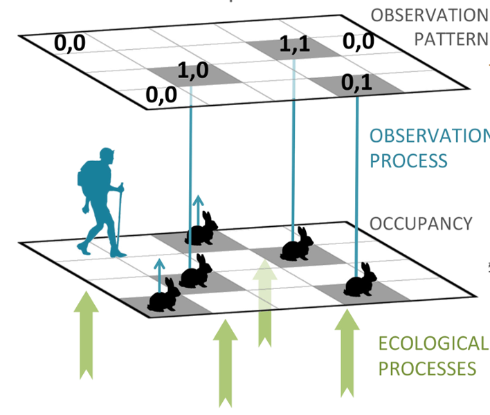
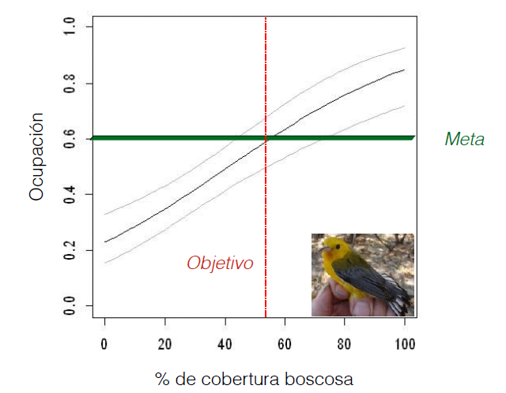

Abundancia
Entendiendo el contexto y la historia
Diego J. Lizcano, Ph.D.
ICN, U. Nacional / Bogota
Gracias Prof. Olga, Angela y Bibiana
Quienes han hecho posible este curso !
https://tinyurl.com/ycezxwzl
Descargar Diapositivas de:
La Ecología: Estudio de las interacciones que determinan la distribución y abundancia.
Charles. Krebs
Distribución y abundancia
Donde están los organismos y cuantos son ?
Relacionado con el problema de contar animales en ecología
- A diferencia de las plantas...
- Los animales se mueven!

El mapa que todos queremos!

Hay que contar los canguros
Contar Animales
Facil para animales que conspicuos que se agrupan.
Contar Animales

No tan facil si no se agrupan. Metodos de Captura - Marca - Recaptura. Distance
Contar Animales

Para algunas especies es engorroso, poco practico y muy costoso
Abundancia relativa: Una variable indicadora del estado de la población
No se cuantos hay pero si donde hay mas y donde hay menos.
http://www.stateofthebirds.org/2016/resources/species-abundance-maps/wood-thrush/#_ga=1.58268970.1097663810.1456855475
Pero debo tener en cuenta que:
Los muestreos no son infalibles

La detectabilidad, una combinacion de factores que depende de:
- 1. Las condiciones del muestreo (clima, hora)
- 2. La habilidad del observador (sensor)
- 3. La biología de la especie que se muestrea
- Este error debe considerarse para evitar sesgos en las estimaciones de abundancia.
Como ocurre el error de detección

Es un error importante que debe considerarse en los muestreos!!!
Mackenzie et al 2002, 2003 al rescate

Libro y programa presence (2006)


Populariza la ocupación (\(\psi\)) como proxi de la abundancia teniendo en cuenta la detectabilidad (\(p\))
La ocupación en acción.
Wildlife Coservation Society, WCS
Advances and applications of occupancy models, MEE
Detecting diversity, TrEE
Modelling of species distributions, under imperfect detection, MEE
Permite establecer metas y monitorearlas en el tiempo.

La ocupación (\(\psi\)) y la probabilidad de detección (\(p\))
La ocupación (\(\psi\)) que es un reflejo de otros parámetros poblacionales importantes como la densidad.
- 1. (\(\psi\)) es la proporción del área muestreada que está ocupada por la especie.
- 2. Visitando el sitio varias veces puedo estar mas seguro que detecto la especie cuando esta se encuentra en ese lugar.
- 3. Los muestreos repetidos son clave.
(\(\psi\)) esta influenciada por variables ambientales (Covariables) como cobertura vegetal, altitud, precipitacion, etc.
Así debería verse una tabla de datos con muestreos repetidos.
## Warning: package 'knitr' was built under R version 3.4.4
| visita 1 | visita 2 | visita 3 | visita 4 | |
|---|---|---|---|---|
| sitio 1 | 1 | 0 | 0 | 1 |
| sitio 2 | 0 | 0 | 0 | 0 |
| sitio 3 | 1 | 1 | 0 | 0 |
| sitio X | 0 | 0 | 0 | 0 |
Ejemplo del calculo de \(\psi\) y \(p\)
Método frecuentista (Máxima verosimilitud).
| v 1 | v 2 | v 3 | v 4 | |
|---|---|---|---|---|
| s 1 | 1 | 0 | 0 | 1 |
| s 2 | 0 | 0 | 0 | 0 |
| s 3 | 1 | 1 | 0 | 0 |
| s X | 0 | 0 | 0 | 0 |
| Historias de detección |
|---|
| Pr(\(H_{1}\)=1001)= \(\psi\) × p1(1–p2)(1–p3)p4 |
| Pr(\(H_{2}\)=0000)= \(\psi\) × (1–p2)(1–p2)(1–p3)(1–p4)p4 |
| Pr(\(H_{3}\)=1100)= \(\psi\) × p1p2(1–p3)(1–p4) |
| Pr(\(H_{x}\)=0000)= \(\psi\) × (1–p2)(1–p2)(1–p3)(1–p4)p4 |
Estas Historias se combinan en un solo modelo de maxima verosimilitud
| Historias de detección |
|---|
| Pr(\(H_{1}\)=1001)= \(\psi\) × p1(1–p2)(1–p3)p4 |
| Pr(\(H_{2}\)=0000)= \(\psi\) × (1–p2)(1–p2)(1–p3)(1–p4)p4 |
| Pr(\(H_{3}\)=1100)= \(\psi\) × p1p2(1–p3)(1–p4) |
| Pr(\(H_{x}\)=0000)= \(\psi\) × (1–p2)(1–p2)(1–p3)(1–p4)p4 |
\[ \begin{aligned} L(\psi, p \mid H_{1},...,H_{x}) = \prod_{i=1}^{x} Pr (H_{i}) \end{aligned} \]
- El modelo admite incorporar covariables para explicar \(\psi\) y \(p\)
El mismo ejemplo del calculo de \(\psi\) y \(p\)
Método Bayesiano.
| v 1 | v 2 | v 3 | v 4 | |
|---|---|---|---|---|
| s 1 | 1 | 0 | 0 | 1 |
| s 2 | 0 | 0 | 0 | 0 |
| s 3 | 1 | 1 | 0 | 0 |
| s X | 0 | 0 | 0 | 0 |
Es importante entender que hay dos procesos que se pueden modelar de forma jerarquica.
- El proceso ecológico (\(\psi\)) sigue una distribución Bernoulli.
- El modelo de observación (\(p\)) sigue una distribución Bernoulli.
- La probabilidad de observar la especie dada que esta presente: \(p\)=Pr(\(y_{i}\)=1 \(\mid\) \(z_{i}\)=1)
- La probabilidad de ocurrencia: \(\psi\) =Pr(\(z_{i}\)=1)
Un modelo jerarquico (Bayesiano)

Admite covariables
Cual uso? Maxima verosimilitud o Bayesiano?
ML
- Paquete unmarked en R
- Admite seleccion "automatica" de modelos con AIC
- Problemas con matrices que tienen muchos NAs
- Problema Hesian y estimados ok.
- Dificultad de 1 a 10: 3 si ya sabes R.
Bayesiano
- Lenguaje BUGS o Stan, llamado desde R
- La seleccion de modelos no es tan sencilla, BIC no es adecuado
- No tiene tantos problemas con muchos NAs en la matriz
- Los estimados son mas precisos.
- Dificultad de 1 a 10: 7 si ya sabes R.
De donde vienen los modelos jerarquicos?
Andy Royle

Padre junto con (James Nichols and Darryl MacKenzie) de los modelos de ocupación
Autor del libro azul (2008).

Libro de nivel avanzado con muchos detalles, formulas, ejemplos y código en R y lenguaje BUGS.
Libro de la libelula (2015).
Recientemente publicado con Marc Kery.

Mas de 700 paginas explicando claramente de donde viene la teoria, en estilo tutorial, comenzando con un nivel basico de R hasta modelos avanzados y su implementacion en R y lenguaje BUGS.
Manos a la obra!

- Nivel?
- Objetos?, Vectores?, DataFrame?
- Loops?, Funciones?
Cronograma
| Día | Tema |
|---|---|
| Viernes | 1. Introducción a R |
| 2. R como herramienta de modelado | |
| Viernes | 3. El concepto de ocupación y su modelado |
| 4. Modelo occu. estático - unmarked101 | |
| Sab Mañ | 5. Modelo occu. estático - Sim Machalilla |
| 6. Modelo occu. estático - Unm Machalilla | |
| Sab Tar | 7. Modelo occu. estático - Bayes Machalilla |
| 9. Preguntas y Datos del mundo real - Pecari | |
| 10. Otros modelos jerárquicos |